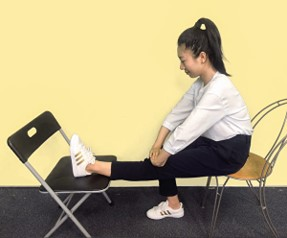
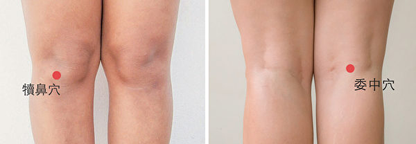

1. 保健膝蓋三大運動 - 訓練股四頭肌肌肉的力量、抱膝運動、壓膝運動
坐姿，一腳伸直，腳尖往上翹，使大腿的肌肉緊繃。維持10秒鐘後小腿慢慢放下。每一腳做10～20次。晨起睡醒時多做，可以讓兩腳更靈活。
【作用】訓練關節周圍肌肉力量，來穩定關節。
坐姿，雙手緊抱一側小腿遠端近踝處，讓小腿儘量往臀部內收，使膝關節彎曲至最大角度，維持30秒。之後腿伸直，再溫和地讓腿曲伸活動5次。以上每一腳反覆做5次。
坐姿，將一腿伸直，令其足跟及小腿遠端靠著另一張椅子，雙手由上往下施以適當的力量壓住膝蓋，維持30秒。注意不要晃動或震動關節。之後腿放下，再溫和地讓腿曲伸活動5次。以上每一腳反覆做5次。
【作用】由於膝關節長期發炎疼痛的結果，會使它越來越緊繃。抱膝運動是拉膝關節前方的筋，壓膝運動是拉膝關節後方的筋。透過這兩個運動，可以讓緊繃的膝關節放鬆，使膝關節軟骨之間的壓力減少，讓關節更靈活。
2. 穴位療法
委中：直接按壓尋找膝關節「內側皺襞」的最疼痛點，于以針刺，針刺時會有強烈的酸麻脹痛的感覺。針刺此處，可以快速的消除疼痛。
犢鼻：針刺此穴，可以消除膝關節囊內的發炎狀態，改善循環障礙。
取膝蓋上方的梁丘、血海，以及膝蓋下方的足三里、陽陵泉、陰陵泉等穴道，可以改善膝關節周圍的氣血循環，放鬆經絡，使膝關節活動更靈活。